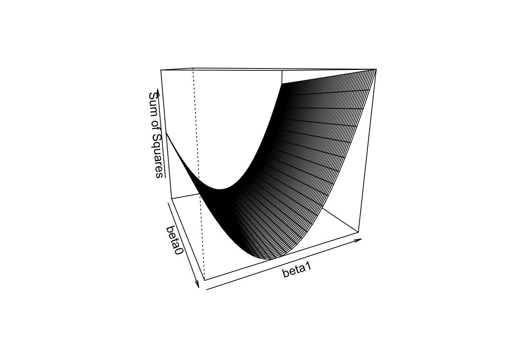
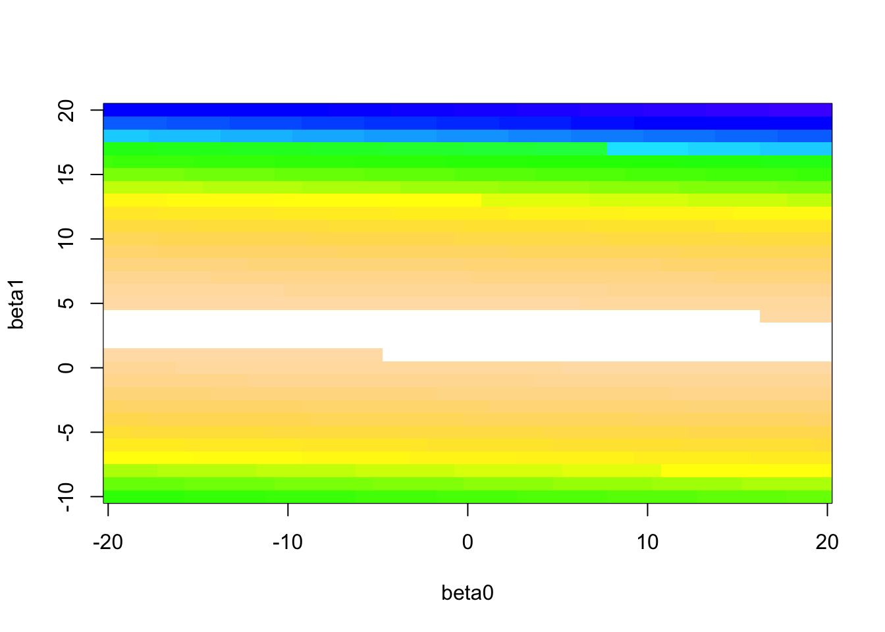
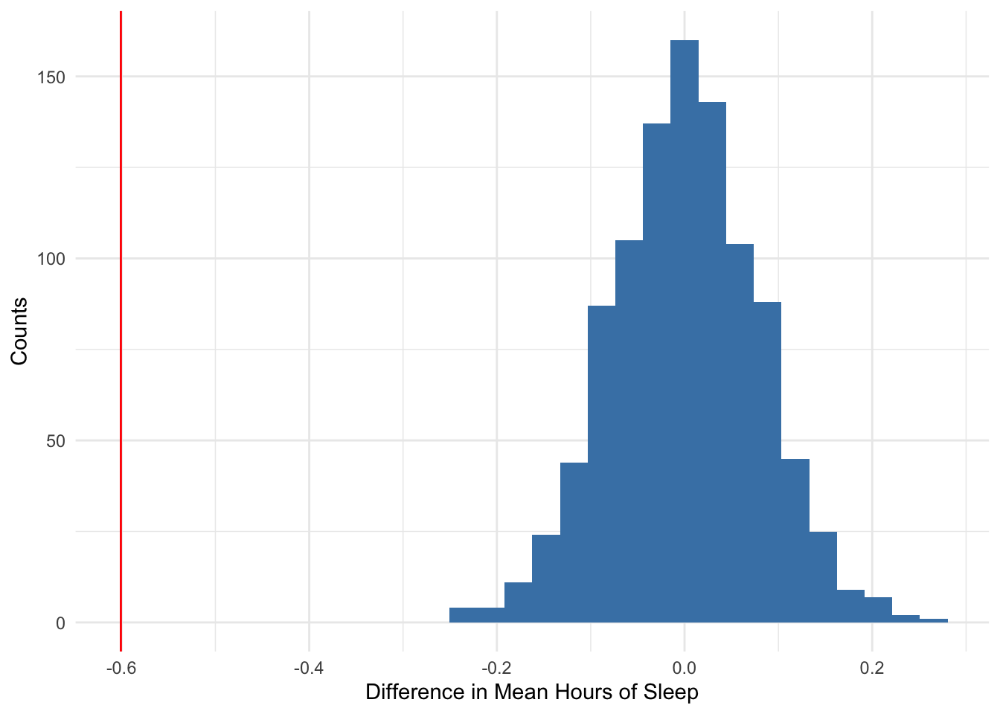

3.4 Least Squares
Let’s try to find the line that minimizes the Sum of Squared Residuals by searching over a grid of values for (intercept, slope).
Below is a visual of the sum of squared residuals for a variety of values of the intercept and slope. The surface height is sum of squared residuals for each combination of slope and intercept.

We can see there is valley where the minimum must be. Let’s visualize this in a slightly different way. We’ll encode the surface height as color (white is lowest).

The large values of the sum of squared residuals are dominating this image, so let’s change the color scheme to see more variation in smaller values (white is lowest).

We can limit our search to \(b_0 \in (-10,10)\) and \(b_1 \in (2,3)\).
beta0 <- seq(-10, 10, by = 0.05)
beta1 <- seq(2, 3, by = 0.05)
b <- expand.grid(beta0,beta1)
ss <- apply(b,1,f)
b[ss == min(ss),]## Var1 Var2
## 6142 -3.7 2.75We have the minimum point. Over the grid of pairs of values, the minimum sum of squared residuals happens when the intercept is -3.7 and the slope is 2.75.
(Optional) Alternative ways (faster than exhaustive search) to find the minimum sum of squared residuals:
- We could try a numerical optimization algorithm such as steepest descent.
- We could use multivariable calculus (find partial derivatives, set equal to 0, and solve).
To get started on the calculus, solve the following two equations for the two unknowns (\(b_0\) and \(b_1\)):
\[\frac{\partial }{\partial \beta_0}\sum_{i=1}^n (y_i - (\beta_0 + \beta_1\,x_i))^2 = 0\] \[\frac{\partial }{\partial \beta_1}\sum_{i=1}^n (y_i - (\beta_0 + \beta_1\,x_i))^2 = 0\]
If you are a math/stat/physics/cs major, you should try this by hand and see if you can get the solutions below.
If you find the minimum using calculus (super useful class!), you’ll find that we can write the Least Squares solution in an equation format as functions of summary statistics (!), the estimated slope is
\[ \beta_1 = r\frac{s_y}{s_x}\]
and the estimated intercept is
\[ \beta_0 = \bar{y} - \beta_1\bar{x} \]
where \(\bar{x}\) is the mean of the variable on the x-axis, \(\bar{y}\) is the mean of the variable on the y-axis, \(s_x\) is the standard deviation of the variable on the x-axis, \(s_y\) is the standard deviation of the variable on the y-axis, and \(r\) is the correlation coefficient between the two variables.
Let’s do that calculation “by hand” first in R.
body %>%
summarize(sy = sd(Chest), sx = sd(Neck), r = cor(Chest,Neck), ybar = mean(Chest), xbar = mean(Neck)) %>%
mutate(beta1 = r*sy/sx, beta0 = ybar - beta1*xbar) %>%
select(beta0, beta1)## beta0 beta1
## 1 -3.188483 2.736883Wow. That was quite a bit of coding. From now on, we’ll take the shortcut and use the lm() function which stands for linear model. This function gives us the least squares solution to the “best” fitting line, as defined by minimizing the sum of squared residuals.
##
## Call:
## lm(formula = Chest ~ Neck, data = body)
##
## Coefficients:
## (Intercept) Neck
## -3.188 2.737